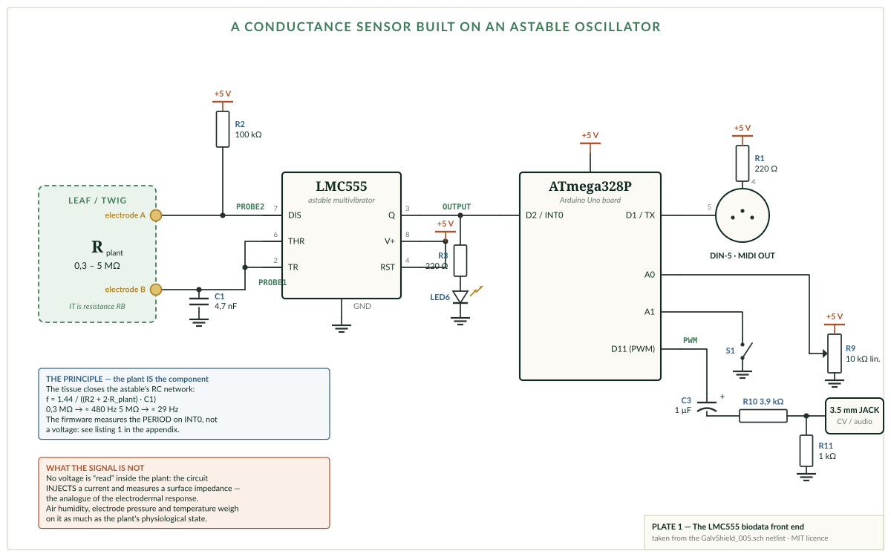
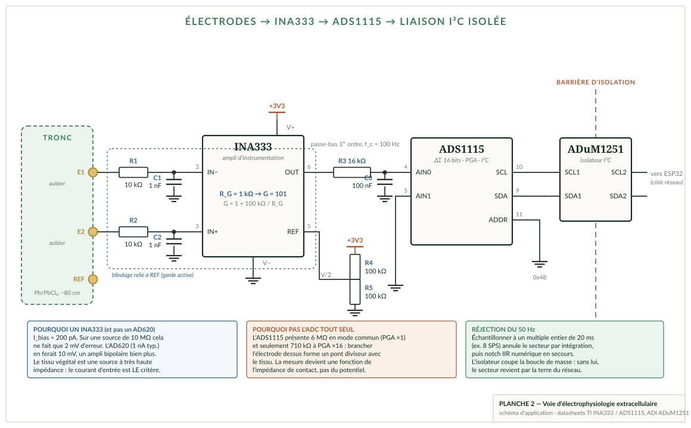
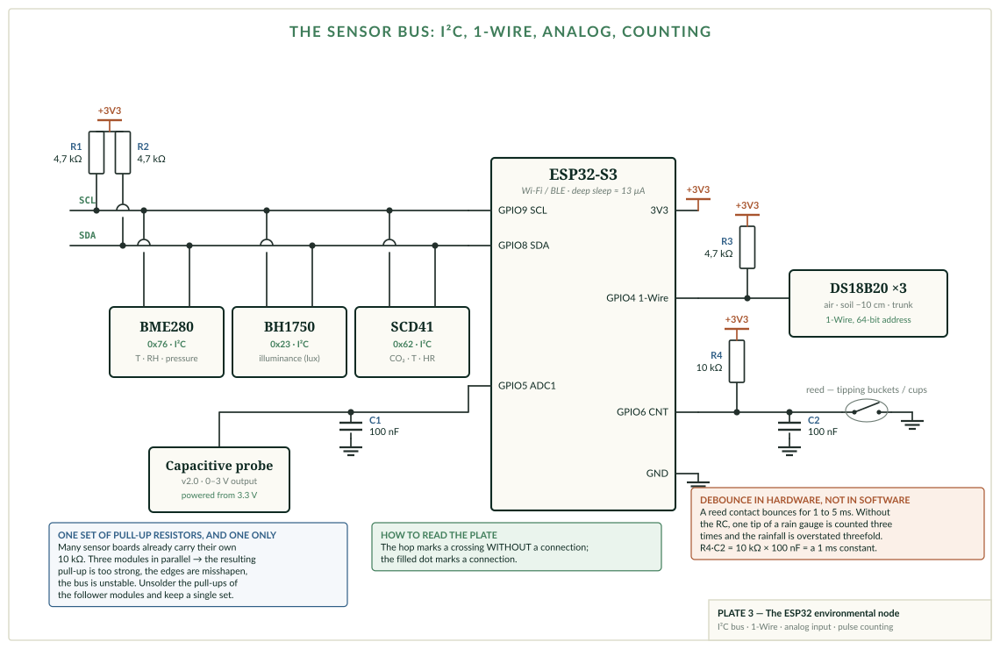
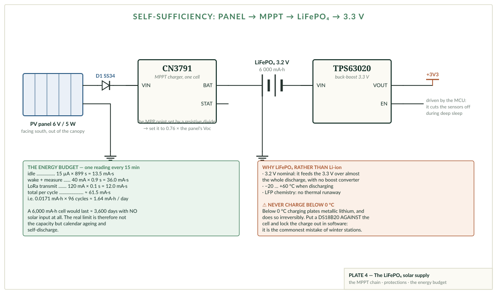
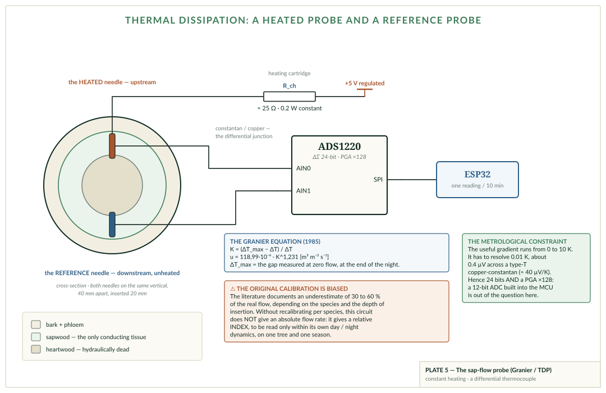

Annexe technique — schémas électroniques,
nomenclatures et programmes
Cinq planches commentées · six nomenclatures · dix listings · soixante-sept dépôts téléchargés et vérifiés
Schémas, nomenclatures et programmes
pour un arbre instrumenté
Ateliers BN — 17 septembre 2026
Cette annexe est le complément matériel du manuel d'atelier. Elle ne raconte rien : elle donne des schémas que l'on peut câbler, des nomenclatures que l'on peut commander et des programmes que l'on peut téléverser. Tout ce qui s'y trouve a été vérifié à une source primaire — datasheet du constructeur, dépôt public, ou relevé direct d'un fichier de conception.
Les prix sont des ordres de grandeur en euros TTC, relevés chez des distributeurs généralistes (Mouser, Digi-Key, Farnell) ou chez les revendeurs maker usuels. Ils servent à dimensionner un budget d'atelier, pas à établir un devis. Les composants passifs sont donnés au prix unitaire, alors qu'ils s'achètent par lots de cent : le coût réel d'un atelier est donc plus bas que la somme des lignes, et le poste dominant est toujours le même — le boîtier, le câble et la batterie, jamais les puces.
Annexe technique
C'est le circuit le plus copié de tout le domaine : on le retrouve, à peu de chose près identique, dans le MIDI Sprout de Data Garden, dans le Biotron de Playtronica et dans la quasi-totalité des projets « plante musicale » publiés sur GitHub. Le schéma ci-dessous n'est pas une reconstitution : il a été relevé sur le fichier de conception Eagle GalvShield_005.sch du dépôt electricityforprogress/BiodataSonificationBreadboardKit, en analysant le netlist du fichier XML.

Un LMC555 monté en multivibrateur astable oscille en chargeant puis déchargeant un condensateur à travers deux résistances. Dans le montage classique, ces deux résistances sont des composants. Ici, la seconde a été remplacée par le végétal lui-même.
Le courant part du +5 V, traverse R2 (100 kΩ), ressort par la broche 7 (décharge) vers l'électrode A, traverse le tissu de la feuille jusqu'à l'électrode B, et vient charger C1 (4,7 nF). Quand la tension sur C1 atteint deux tiers de l'alimentation, le comparateur interne bascule, la broche 7 est mise à la masse et C1 se décharge à travers le même chemin. Quand la tension retombe au tiers de l'alimentation, le cycle recommence.
La période dépend de la résistance vue entre les deux électrodes :
f ≈ 1,44 / ( (R2 + 2·Rplante) · C1 )
Pour C1 = 4,7 nF et R2 = 100 kΩ, une feuille turgescente à 300 kΩ donne environ 480 Hz, tandis qu'un tissu sec à 5 MΩ tombe vers 29 Hz. La plage utile couvre donc plus d'une décade — c'est confortable, et c'est ce qui rend le montage aussi robuste pédagogiquement.
La sortie (broche 3) est un signal carré. Le microcontrôleur ne mesure pas une tension : il compte le temps entre deux fronts montants, sur une entrée d'interruption. Le reste — seuil, gamme musicale, canal MIDI — est du logiciel, et se règle avec le potentiomètre R9 et le bouton S1.
Deux sorties coexistent. La sortie MIDI est une boucle de courant sur embase DIN-5 : la broche 5 reçoit directement la ligne TX du microcontrôleur, la broche 4 est tirée au +5 V par R1. La sortie CV/audio est le signal MLI de la broche D11, débarrassé de sa porteuse par le réseau C3-R10-R11 avant de partir vers un jack 3,5 mm.
Il faut le dire clairement, parce que l'essentiel du discours commercial autour de ces appareils repose sur l'ambiguïté inverse : ce circuit n'écoute pas la plante, il l'interroge. Il injecte un courant et mesure l'impédance de surface qui en résulte. C'est l'exact analogue de la réponse électrodermale mesurée sur la peau humaine — et, comme elle, cette impédance dépend au moins autant de l'humidité de l'air, de la qualité du contact et de la température que de l'état physiologique du sujet. Ce n'est pas une raison de s'en priver : c'est une raison de ne pas lui faire dire ce qu'elle ne dit pas.
| Rep. | Composant | Valeur | Référence fabricant | Boîtier | ≈ € |
|---|---|---|---|---|---|
| U1 | Temporisateur CMOS | — | Texas Instruments LMC555CN | DIP-8 | 1,10 |
| — | Support de circuit | 8 broches | Assmann A 08-LC-TT | DIP-8 | 0,15 |
| R2 | Résistance | 100 kΩ 1 % | Stackpole RNMF14FTC100K | axial 1/4 W | 0,10 |
| R1, R3–R8 | Résistances (×7) | 220 Ω | Stackpole RNMF14FTC220R | axial 1/4 W | 0,70 |
| R9 | Potentiomètre linéaire | 10 kΩ | Bourns PTV09A-4020F-B103 | 6 mm | 0,85 |
| R10 | Résistance | 3,9 kΩ | Stackpole RNMF14FTC3K90 | axial | 0,10 |
| R11 | Résistance | 1 kΩ | Stackpole RNMF14FTC1K00 | axial | 0,10 |
| C1 | Condensateur film | 4,7 nF | KEMET C315C472K1R5TA | pas 5 mm | 0,25 |
| C2 | Chimique | 47 µF / 25 V | KEMET ESH476M025AC3AA | radial | 0,18 |
| C3 | Chimique | 1 µF / 50 V | KEMET ESH105M050AC3AA | radial | 0,18 |
| C4 | Découplage | 100 nF | KEMET C320C104K5R5TA | pas 5 mm | 0,22 |
| S1 | Bouton tactile | — | Omron B3F-1000 | 6 mm | 0,35 |
| LED1–6 | LED 5 mm | R/J/V/B/W | Lite-On LTL2H3KEK et suivantes | 5 mm | 3,40 |
| MIDI | Embase DIN 5 broches | — | CUI SDS-50J | traversante | 1,05 |
| X1, X2 | Jacks stéréo 3,5 mm (×2) | — | CUI SJ1-3523N | traversante | 1,50 |
| — | Électrodes adhésives | TENS | pastilles + cordons à pression | — | 6,00 |
| — | Carte Arduino Uno (ou compatible) | — | ATmega328P | — | 12,00 – 25,00 |
| — | Plaque d'essai + fils | 830 points | — | — | 6,00 |
| Total indicatif, hors carte Arduino | ≈ 22 € |
Ici, contrairement à la planche 1, on n'injecte rien. On écoute une différence de potentiel qui existe déjà dans l'arbre, de l'ordre de quelques millivolts, sur une source dont l'impédance se compte en mégohms voire en gigohms. Tout le schéma découle de cette seule contrainte.

Une électrode plantée dans l'aubier voit une source dont l'impédance équivalente se situe couramment entre 1 et 50 MΩ. Tout étage qui prélève du courant sur cette source crée une chute de tension parasite. C'est pourquoi le choix de l'amplificateur ne se fait pas sur son gain — n'importe quel montage sait amplifier — mais sur son courant de polarisation d'entrée.
L'INA333 tire 200 picoampères. Sur 10 MΩ, cela produit une erreur de 2 mV. L'AD620, excellent par ailleurs, tire 1 nanoampère : 10 mV d'erreur sur la même source, soit davantage que le signal recherché. Un amplificateur opérationnel bipolaire ordinaire tirerait cent fois plus encore. Le critère de sélection est donc unique, et il n'est pas négociable.
Brancher l'électrode directement sur l'entrée de l'ADS1115, sous prétexte qu'il possède un amplificateur à gain programmable. Cet étage est à capacités commutées : il présente 6 MΩ en mode commun au gain ×1, et seulement 710 kΩ au gain ×16. Face à un tissu de 10 MΩ, on ne mesure plus un potentiel mais le rapport de division entre le tissu et le convertisseur — c'est-à-dire la qualité du contact de l'électrode, qui dérive de son côté. Le montage « marche », produit des courbes, et ne mesure rien.
Le tableau ci-dessous donne l'erreur de tension Ibias × Rsource pour les composants usuels. Le signal recherché valant 1 à 50 mV, la lecture est sans appel.
| Composant | Ibias max | sur 1 MΩ | sur 100 MΩ | sur 1 GΩ |
|---|---|---|---|---|
| INA333 | 200 pA | 0,2 mV | 20 mV | 200 mV |
| AD8232 | 200 pA | 0,2 mV | 20 mV | 200 mV |
| AD8221 (grade BR) | 0,4 nA | 0,4 mV | 40 mV | 400 mV |
| INA128 (pire cas) | 5 nA | 5 mV | 500 mV | saturé |
| INA826 | 65 nA | 65 mV | saturé | saturé |
L'INA826 est le piège : son impédance d'entrée annoncée de 20 GΩ est excellente, mais son courant de polarisation est cinq cents fois pire que celui de l'INA333. Impédance d'entrée et courant de polarisation sont deux paramètres indépendants, et c'est le second qui décide.
Conséquence : au-delà d'une dizaine de mégohms de source — écorce sèche, contact vieillissant — il faut interposer un suiveur à entrée électromètre au plus près de l'électrode (LMP7721, ADA4530-1, OPA129 : courants de polarisation en femtoampères), puis attaquer l'INA333 avec sa sortie basse impédance. C'est l'architecture obligatoire pour du potentiel de surface en continu, et elle est presque toujours absente des projets amateurs.
Le signal est unipolaire à la sortie de l'amplificateur : il faut donc le recentrer. Le diviseur R4/R5 fixe la broche REF à la moitié de l'alimentation, ce qui place le zéro du signal au milieu de la plage du convertisseur et permet de voir les excursions dans les deux sens.
Cette même tension sert de garde active : le blindage des câbles d'entrée n'est pas relié à la masse mais à REF. Le blindage suit alors le potentiel du signal, la capacité parasite du câble ne se charge plus, et la bande passante ne s'effondre pas malgré la résistance de source élevée. C'est le même principe que la « driven right leg » des électrocardiographes.
L'électrode de référence a deux fonctions, souvent confondues. La première est d'offrir un chemin de retour au courant de polarisation : un amplificateur d'instrumentation dont les deux entrées flottent ne mesure rien, ses entrées dérivant hors de la plage de mode commun. Sans électrode de référence, le montage ne fonctionne pas, quelle que soit la qualité de l'amplificateur. La seconde est de fixer un potentiel de comparaison.
Ces deux fonctions n'appellent pas le même emplacement. Une référence dans le sol offre une impédance faible et une grande surface, mais son potentiel de jonction sol/racine dérive avec la pluie et la température : bonne pour le retour de courant, médiocre comme référence de potentiel. Une référence dans le tronc, à cinquante centimètres au moins des électrodes de mesure, baigne dans la même chimie : son potentiel de jonction est comparable à celui des électrodes de mesure et se soustrait donc au premier ordre. C'est le meilleur compromis, au prix d'une blessure supplémentaire. Le dispositif employé par Gibert et ses collègues sur un peuplier en 2006 utilisait, lui, une électrode plomb / chlorure de plomb enterrée à 80 cm.
Dans tous les cas l'électrode doit être non polarisable. Un piquet d'acier est une électrode polarisable : il se comporte en condensateur de double couche, développe des potentiels galvaniques avec le milieu et dérive de plusieurs millivolts par jour par corrosion et variation de sa couche d'oxyde. L'acier reste acceptable pour un signal rapide en couplage alternatif ; il est inutilisable pour un potentiel lent suivi sur plusieurs jours.
Le problème dominant en mesure longue durée n'est pas le bruit : c'est la dérive du potentiel de demi-pile des électrodes, qui apparaît en différentiel et se confond avec un signal biologique lent. Si le projet ne cherche que des événements — réponse à une blessure, à un choc thermique, à l'arrosage — un couplage alternatif à 0,05 Hz élimine le problème d'un seul coup. C'est précisément ce que fait l'AD8232 avec son passe-haut intégré à deux pôles, explicitement conçu pour supprimer les artefacts de mouvement et le potentiel de demi-pile. Pour un arbre parlant, c'est très probablement le bon choix — à condition d'assumer qu'on renonce alors aux dérives lentes, c'est-à-dire à la saisonnalité.
Deux précautions gratuites : prendre les deux électrodes de mesure dans le même lot et le même modèle, pour que leurs dérives se soustraient ; et interposer un pont de gel KCl — les mobilités du potassium et du chlorure étant quasi identiques, le potentiel de jonction y est minimal. C'est exactement ce que fait le gel d'une électrode ECG jetable.
Un arbre instrumenté est une antenne de plusieurs mètres au milieu d'un champ électrique à 50 Hz. Trois lignes de défense se cumulent, dans cet ordre :
L'isolateur ADuM1251 ne sert pas à protéger l'humain : sous 3,3 V il n'y a rien à protéger. Il coupe la boucle de masse. Sans lui, la masse du montage rejoint la terre du réseau par l'alimentation de la passerelle, et le secteur revient dans la mesure par ce chemin, en contournant toutes les précautions prises en amont.
| Rep. | Composant | Caractéristique déterminante | Référence | ≈ € |
|---|---|---|---|---|
| U1 | Ampli d'instrumentation | Ibias 200 pA typ., 0,05 µV/°C | TI INA333AIDGKR | 6,50 |
| — | Variante plus bruyante mais courante | Ibias 1 nA, bruit 9 nV/√Hz | ADI AD8221 / AD620 | 9,00 |
| U2 | Convertisseur ΔΣ 16 bits | 4 voies, PGA ×1…×16, I²C, 860 SPS | TI ADS1115IDGSR | 5,40 |
| — | Variante 24 bits pour signaux lents | PGA ×128, réf. interne | TI ADS1220 / ADS1256 | 8,00 – 14,00 |
| U3 | Isolateur I²C | barrière 2,5 kV, alimentation isolée à part | ADI ADuM1251ARZ | 6,80 |
| — | Convertisseur DC-DC isolé | 1 W, 3,3 V → 3,3 V isolé | Recom R1SE-3.33.3S | 5,90 |
| R1, R2 | Limitation d'entrée | 10 kΩ 0,1 %, métal | Vishay MMA0204 | 0,60 |
| R_G | Gain | 1 kΩ 0,1 % → G = 101 | Vishay MMA0204 | 0,30 |
| R4, R5 | Référence à mi-alimentation | 100 kΩ 0,1 % appairées | Vishay | 0,60 |
| R3 | Anti-repliement | 16 kΩ avec C3 → fc ≈ 100 Hz | — | 0,10 |
| C1, C2 | Filtrage RF d'entrée | 1 nF C0G | KEMET | 0,40 |
| C3 | Anti-repliement | 100 nF C0G | KEMET | 0,25 |
| E1, E2 | Pastilles Ag/AgCl (×2) | non polarisables : interface réversible, dérive faible | A-M Systems 550015 (Ø 2 × 4 mm), 36 $ pièce | 68,00 |
| — | Variante économique | aiguilles inox 316L Ø 1 mm | quincaillerie | 2,00 |
| REF | Électrode de référence de sol | Pb/PbCl₂ ou Cu/CuSO₄ | électrode de potentiel spontané | 45,00 |
| — | Câble blindé par paire | faible triboélectricité, PTFE | au mètre | 4,00/m |
| Total voie complète, électrodes de laboratoire | ≈ 115 – 180 € |
Sans contexte, le signal d'un arbre ne veut rien dire. Une variation d'impédance à midi en juillet et la même variation à quatre heures du matin en novembre n'ont pas le même sens. Le nœud environnemental n'est donc pas un accessoire : c'est ce qui rend le signal principal interprétable.

Le bus I²C porte les capteurs intelligents : température, humidité, pression, lumière, CO₂. Chacun répond à une adresse propre, deux fils suffisent pour tous. La contrainte est la longueur : au-delà d'un mètre environ, la capacité du câble arrondit les fronts et le bus devient instable. On descend alors les résistances de tirage à 2,2 kΩ, ou l'on renonce à l'I²C.
Le 1-Wire accepte au contraire plusieurs dizaines de mètres. C'est lui qui va chercher les températures loin du boîtier : l'air sous abri, le sol à dix centimètres, le tronc lui-même. Chaque DS18B20 porte une adresse gravée sur 64 bits, ce qui permet d'en mettre plusieurs sur le même fil sans ambiguïté — à condition de noter quelle adresse correspond à quel emplacement, faute de quoi l'ordre change au premier remplacement.
L'entrée analogique reçoit la sonde capacitive d'humidité du sol. Le comptage d'impulsions reçoit l'anémomètre et le pluviomètre.
Un contact à lame souple rebondit pendant une à cinq millisecondes. Une bascule de pluviomètre produit alors trois ou quatre interruptions au lieu d'une, et la pluie est surestimée d'autant. Le réseau R4-C2 (10 kΩ × 100 nF, soit 1 ms de constante de temps) résout le problème avant qu'il n'atteigne le logiciel. Un anti-rebond purement logiciel oblige à rester éveillé, ce qui ruine le budget d'énergie.
Un BH1750 mesure des lux, c'est-à-dire un flux lumineux pondéré par la sensibilité de l'œil humain, qui culmine dans le vert vers 555 nm. Or la photosynthèse ne voit pas comme nous : elle compte des photons entre 400 et 700 nm, et travaille surtout dans le bleu et le rouge — précisément là où l'œil est peu sensible. Les deux grandeurs ne mesurent pas la même chose.
Sous lumière solaire, et sous elle seulement, un facteur empirique d'environ 0,0185 permet de passer des lux aux µmol·m⁻²·s⁻¹ : 108 000 lx de plein soleil correspondent à environ 2 000 µmol·m⁻²·s⁻¹. Ce facteur est faux pour toute autre source : sous un éclairage horticole à LED rouge et bleu, l'erreur dépasse couramment un facteur trois. Si le rayonnement utile à la plante est une variable du projet, il faut un capteur quantique — un Apogee SQ-500 ou équivalent, dix fois plus cher, mais qui mesure la bonne grandeur.
| Rep. | Capteur / composant | Grandeur · plage | Précision annoncée | Interface | ≈ € |
|---|---|---|---|---|---|
| U1 | ESP32-S3 (carte DevKit) | — | veille ≈ 13 µA au niveau carte | Wi-Fi / BLE | 9,00 – 15,00 |
| — | Variante ESP32-C6 | — | veille ≈ 7 µA au niveau puce | Wi-Fi 6 / Thread | 8,00 |
| — | Variante Raspberry Pi Pico 2 W | — | RP2350, 520 Ko SRAM | Wi-Fi / BLE 5.2 | 7,00 |
| A1 | BME280 | T −40…+85 °C · HR 0–100 % · P 300–1100 hPa | ±1,0 °C · ±3 % HR · ±1 hPa | I²C / SPI | 4,00 |
| — | BME680 (ajoute un capteur de gaz) | idem + COV (indice) | indice non étalonné, dérive | I²C / SPI | 12,00 |
| — | SHT31 (référence T/HR) | T −40…+125 °C · HR 0–100 % | ±0,2 °C · ±2 % HR | I²C | 9,00 |
| — | SHT85 (métrologie) | T −40…+105 °C · HR 0–100 % | ±0,1 °C · ±1,5 % HR | I²C | 45,00 |
| A2 | BH1750FVI | éclairement 1 – 65 535 lx | ±20 % typ. | I²C | 3,00 |
| — | TSL2591 (forte dynamique) | 188 µlx – 88 000 lx | — | I²C | 7,00 |
| — | Apogée SQ-500 (PAR de référence) | PPFD 0 – 4 000 µmol m⁻² s⁻¹ | erreur directionnelle ≤ ±5 % à 75° | analogique 0,01 mV/µmol | ≈ 300,00 |
| A3 | SCD41 | CO₂ 400 – 5 000 ppm | ±(40 ppm + 5 %) | I²C | 38,00 |
| — | SCD30 (meilleure justesse absolue) | CO₂ 400 – 10 000 ppm | ±(30 ppm + 3 %) | I²C | 45,00 |
| A4–A6 | DS18B20 étanches (×3) | T −55…+125 °C | ±0,5 °C entre −10 et +85 °C | 1-Wire | 9,00 |
| A7 | Sonde capacitive d'humidité du sol v2.0 | sortie 0 – 3 V, non étalonnée | relatif seulement | analogique | 4,00 |
| — | Watermark 200SS (potentiel matriciel) | 0 – 200 kPa | étalonnage Shock 1998, 10–100 kPa | résistif (excitation alternative) | 40,00 |
| — | TEROS 12 (teneur en eau volumique) | VWC · T · CE | ±0,03 m³/m³ étalonnage générique | SDI-12 | ≈ 250,00 |
| R1–R4 | Résistances de tirage et anti-rebond | 4,7 kΩ ×3, 10 kΩ | 1 % | — | 0,40 |
| C1, C2 | Anti-rebond et découplage | 100 nF ×2 | X7R | — | 0,30 |
| — | Anémomètre à coupelles à contact ILS | vent | selon modèle | impulsions | 25,00 |
| — | Pluviomètre à augets | 0,2 mm par bascule | ±2 % typ. | impulsions | 30,00 |
Les sondes vendues quelques centimes, à deux broches nues et dorées, mesurent la conductivité du sol entre deux électrodes traversées par un courant continu. Cette configuration provoque une électrolyse : le métal d'une électrode se dissout et se dépose sur l'autre. En sol humide et sous tension permanente, la destruction est visible en quelques semaines, et la dérive bien avant. S'y ajoute une sensibilité majeure à la salinité : un apport d'engrais fait chuter la résistance sans qu'une goutte d'eau ait bougé.
Les sondes capacitives déplacent le problème : leurs électrodes sont noyées dans l'époxy, le courant continu ne circule plus, la corrosion disparaît. Elles restent toutefois non étalonnées et sensibles à la texture du sol — elles donnent un indice relatif, pas une teneur en eau. Les versions v1.2, très répandues, sont dépourvues de régulateur embarqué et leur lecture varie avec la tension d'alimentation : on privilégiera les v2.0, et l'on alimentera la sonde sous une tension stable.
Au-dessus, deux familles de mesures véritablement quantitatives coexistent : le potentiel matriciel, qui exprime l'effort que la plante doit fournir pour extraire l'eau, mesuré par un Watermark 200SS ou un tensiomètre ; et la teneur en eau volumique, mesurée par réflectométrie temporelle. Pour un arbre, c'est le potentiel matriciel qui est physiologiquement pertinent : c'est lui que l'arbre « ressent ».
Une station qui s'arrête en novembre n'a pas mesuré une année : elle a mesuré un été. L'autonomie n'est pas un raffinement, c'est la condition de l'existence même d'une série temporelle.

Le calcul se fait toujours sur un cycle complet, pas sur une consommation moyenne. Pour un relevé toutes les quinze minutes avec émission LoRa :
| Phase | Courant | Durée | Charge |
|---|---|---|---|
| Veille profonde | 15 µA | 899 s | 13,5 mA·s |
| Réveil, stabilisation et mesures | 40 mA | 0,9 s | 36,0 mA·s |
| Émission LoRa | 120 mA | 0,1 s | 12,0 mA·s |
| Par cycle | 900 s | 61,5 mA·s |
Soit 0,0171 mA·h par cycle, 1,64 mA·h par jour, environ 600 mA·h par an. Une cellule de 6 000 mA·h tiendrait donc près de dix ans sans le moindre apport solaire. Ce résultat, contre-intuitif, a une conséquence pratique nette : dans une station bien conçue, la capacité n'est jamais la contrainte. Ce qui tue les stations, c'est la consommation résiduelle des cartes de développement — un régulateur à faible rendement ou une puce USB-série qui continue de tirer dix milliampères pendant la veille suffit à multiplier le budget par mille.
Toutes les chimies au lithium, LiFePO₄ comprise, interdisent la charge sous 0 °C : le lithium se dépose alors sous forme métallique sur l'anode, de façon irréversible, et la capacité s'effondre en quelques cycles. C'est l'avarie numéro un des stations hivernales, et elle est silencieuse. La parade tient en trois euros : un DS18B20 collé contre la cellule et un verrouillage logiciel de la charge.
| Liaison | Portée réaliste | Débit utile | Contrainte | Abonnement |
|---|---|---|---|---|
| Wi-Fi | 30 – 80 m | élevé | consommation d'association élevée | — |
| LoRaWAN (TTN) | 2 – 15 km | quelques octets | 1 % de rapport cyclique en EU868 ; sur le réseau communautaire TTN, politique d'usage équitable de 30 s d'émission par jour et 10 messages descendants | gratuit |
| NB-IoT / LTE-M | couverture opérateur | quelques ko | dépend d'un opérateur, carte SIM | ≈ 10 – 30 €/an |
| Maillage LoRa (Meshtastic) | quelques km, relayé | faible | pas d'infrastructure, mais pas de garantie | — |
La politique d'usage équitable de TTN est plus contraignante qu'il n'y paraît : trente secondes d'émission par jour, à un facteur d'étalement moyen, autorisent environ une centaine de messages courts — soit très exactement le rythme d'un relevé au quart d'heure. Il n'y a pas de marge pour transmettre une forme d'onde. Le traitement doit donc avoir lieu dans le nœud, et c'est le résumé statistique, non le signal brut, qui voyage.
Un boîtier IP67 parfaitement étanche est une machine à fabriquer de l'eau. Le jour, l'air intérieur se dilate ; la nuit, il se contracte et aspire de l'air humide par le moindre défaut ; au matin, la vapeur condense sur l'électronique froide. Le cycle se répète et l'eau s'accumule.
La solution n'est pas de mieux étancher mais de ventiler sélectivement : un évent à membrane ePTFE laisse passer les molécules de gaz et de vapeur, bloque l'eau liquide et les poussières, et supprime la différence de pression qui aspirait l'air humide. Les câbles, eux, entrent par des presse-étoupes à joint, toujours par le dessous, avec une boucle d'égouttement en amont pour que l'eau ruisselant le long du câble tombe avant d'atteindre l'entrée.
| Rep. | Composant | Caractéristique | Référence indicative | ≈ € |
|---|---|---|---|---|
| PV | Panneau solaire | 6 V / 5 W, verre trempé | générique cadre alu | 18,00 |
| D1 | Diode Schottky anti-retour | 40 V / 3 A, Vf 0,5 V | SS34 | 0,20 |
| U1 | Chargeur MPPT 1 cellule | point de puissance par pont résistif | CN3791 (module) | 6,00 |
| BT1 | Accumulateur LiFePO₄ | 3,2 V · 6 000 mA·h · −20…+60 °C | cellule 32700 + support | 14,00 |
| U2 | Convertisseur abaisseur-élévateur | 3,3 V, η > 90 %, arrêt commandé | TI TPS63020 | 7,50 |
| — | Sonde de température de batterie | verrouillage de charge < 0 °C | DS18B20 | 3,00 |
| F1 | Fusible réarmable | PTC 1 A | MF-R110 | 0,40 |
| — | Boîtier étanche | IP65/IP67, ABS, presse-étoupes | 160 × 110 × 90 mm | 16,00 |
| — | Évent à membrane ePTFE | équilibrage de pression, anti-condensation | Gore Protective Vent (vissant) | 7,00 |
| — | Presse-étoupes M12 à joint | ×4 | nylon IP68 | 4,00 |
| — | Abri météorologique à persiennes | erreur radiative réduite | type Stevenson, 7 coupelles | 35,00 |
| Total chaîne d'énergie et protection | ≈ 111 € |
De toutes les grandeurs mesurables sur un arbre, le flux de sève est la plus proche de ce qu'un profane appellerait « ce que l'arbre est en train de faire ». C'est aussi la plus invasive : elle exige de percer l'aubier.

Deux aiguilles sont implantées dans l'aubier sur la même verticale, à quarante millimètres d'écart. Celle du haut contient une résistance chauffée à puissance constante — environ 0,2 W. Celle du bas ne chauffe pas et sert de référence. Un couple thermoélectrique différentiel mesure l'écart de température entre les deux.
Quand la sève ne monte pas, la chaleur ne s'évacue que par conduction et l'écart est maximal. Quand la sève monte, elle emporte la chaleur et l'écart diminue. Granier a établi en 1985 une relation empirique entre cet écart et la densité de flux :
K = (ΔTmax − ΔT) / ΔT
u = 118,99·10⁻⁶ · K1,231 [m³ m⁻² s⁻¹]
Le coefficient dépend entièrement du système d'unités retenu, et les quatre écritures suivantes, toutes présentes dans la littérature, sont strictement équivalentes :
| Écriture | Unité de u |
|---|---|
| u = 4,284 · K1,231 | L·dm⁻²·h⁻¹, soit dm/h |
| u = 0,0119 · K1,231 | cm³·cm⁻²·s⁻¹, soit cm/s |
| u = 119·10⁻⁶ · K1,231 | m³·m⁻²·s⁻¹, soit m/s |
| u = 0,119 · K1,231 | kg·m⁻²·s⁻¹ (× masse volumique) |
Confondre les deux écritures du milieu introduit un facteur 100. C'est l'erreur d'implémentation la plus fréquente de toute la méthode. L'exposant exact est 1,231 ; la valeur 1,23 est un arrondi. Enfin, u est une vitesse de filtration — un volume par unité de surface d'aubier conducteur — et non la vitesse réelle de la sève dans les vaisseaux, qui est plus élevée.
où ΔTmax est l'écart relevé en fin de nuit, lorsque le flux est supposé nul. Cette hypothèse est elle-même une source d'erreur : par nuit chaude et sèche, la transpiration nocturne ne s'annule pas, et l'on sous-estime alors ΔTmax, donc tout le reste de la journée.
L'étalonnage d'origine de Granier a été établi sur un petit nombre d'espèces. La littérature ultérieure documente des sous-estimations massives : −60 % sur noisetier contre potomètre de précision (Sensors 19:2419, 2019) ; −69 % sur Pinus tabuliformis faute de calibration d'espèce ; −37 % sur l'usage d'eau d'un peuplement de conifères (Peters et al., New Phytologist, 2018) ; jusqu'à −50 % lorsque la sonde déborde de l'aubier conducteur (Clearwater et al., 1999). Une méta-analyse de 290 expériences de calibration (Flo et al., Agric. For. Meteorol., 2019) conclut que les méthodes à dissipation ont la plus faible exactitude et le plus fort biais proportionnel, mais une bonne linéarité et une bonne précision : elles conviennent au flux relatif, pas au flux absolu. Sans recalibration sur l'espèce étudiée, ce montage ne donne pas un débit absolu. Il donne un indice relatif, parfaitement utilisable pour suivre une dynamique jour/nuit ou un stress hydrique sur un même arbre, mais qu'il serait malhonnête de convertir en litres par jour.
Un tronc n'est pas isotherme. Do et Rocheteau ont mesuré en 2002 des gradients thermiques naturels de 0,3 à 3,5 °C entre deux points distants de huit à dix centimètres — positifs la nuit, négatifs le jour — capables d'induire des erreurs de flux dépassant 100 %. L'écart utile de la mesure étant du même ordre, l'artefact est indiscernable du signal. Le remède validé est le chauffage cyclique : 45 minutes allumé, 15 minutes éteint. La phase froide donne le gradient naturel seul, qu'on soustrait ensuite. Elle divise en outre la consommation par quatre — dans une station solaire, c'est un double bénéfice.
L'écart utile va de zéro à une dizaine de kelvins, et il faut le résoudre au centième de kelvin. Un couple cuivre-constantan produit environ 40 µV par kelvin : il faut donc distinguer 0,4 µV. Aucun convertisseur intégré à un microcontrôleur ne sait faire cela. D'où le choix d'un convertisseur 24 bits muni d'un amplificateur à gain programmable ×128, et d'une référence de tension stable en température — car une dérive de la référence se lit exactement comme une variation de flux.
Les autres méthodes thermiques répondent à d'autres besoins. La méthode du rapport de chaleur (heat ratio method) envoie une impulsion brève au lieu d'un chauffage continu et mesure la dissymétrie de propagation de part et d'autre de la source : elle sait mesurer les flux très lents et surtout les flux inverses, invisibles à la méthode Granier, et elle consomme beaucoup moins. C'est celle qu'emploient les instruments d'ICT International, et c'est aussi celle retenue par le TreeTalker, qui envoie une impulsion de six secondes une fois par heure.
| Rep. | Élément | Détail | ≈ € |
|---|---|---|---|
| — | Tube inox 316L | Ø ext. 2 mm, paroi 0,2 mm, longueur 20 mm ×2 | 6,00 |
| R_ch | Fil résistif constantan | ≈ 25 Ω bobinés sur l'aiguille amont | 3,00 |
| — | Couple thermoélectrique cuivre / constantan | type T, fil 0,08 mm | 9,00 |
| — | Résine époxy thermiquement conductrice | remplissage des aiguilles | 8,00 |
| U1 | Convertisseur ΔΣ 24 bits | TI ADS1220, PGA ×128, réf. interne | 8,00 |
| — | Référence de tension de précision | LM4040 2,048 V | 1,50 |
| — | Isolation thermique du site de mesure | mousse réfléchissante + écran | 6,00 |
| — | Mèche et guide de perçage | Ø 2 mm, butée de profondeur | 12,00 |
| Total sonde bricolée, les deux aiguilles | ≈ 54 € |
Deux trous de deux millimètres dans l'aubier d'un arbre adulte sain se compartimentent normalement. Mais chaque perforation est une porte d'entrée pour les champignons de carie, et le bois ne cicatrise pas : il cloisonne. On limitera donc le nombre de sondes, on les espacera verticalement, on désinfectera le matériel entre deux arbres, et l'on s'abstiendra sur un sujet déjà affaibli, sur un arbre remarquable ou sur un jeune sujet. Sur un arbre de moins de quinze centimètres de diamètre, la méthode est de toute façon inapplicable.
Les nomenclatures précédentes se lisent planche par planche. Celle-ci se lit projet par projet : elle répond à la seule question que pose réellement un porteur d'atelier, qui est de savoir ce qu'il obtient pour ce qu'il dépense.
| Configuration | Ce qu'elle mesure | Ce qu'elle ne mesure pas | Budget |
|---|---|---|---|
| A — Atelier découverte planche 1 seule | Impédance de surface d'une feuille, convertie en MIDI. Un micro-contrôleur, une plante, un synthétiseur. | Rien de physiologique au sens strict. Aucune donnée conservable. | ≈ 45 € avec la carte Arduino |
| B — Station environnementale planches 3 et 4 | Température de l'air, du sol et du tronc, humidité, pression, lumière, CO₂, pluie, vent. Séries horodatées sur plusieurs années. | L'état interne de l'arbre. On mesure son environnement, pas lui. | ≈ 230 € |
| C — Station physiologique B + planche 5 | Tout ce qui précède, plus la dynamique du flux de sève et donc la transpiration relative. | Un débit absolu, sans recalibration par espèce. | ≈ 290 € |
| D — Chaîne complète B + C + planche 2 | Tout ce qui précède, plus le potentiel électrique extracellulaire, correctement amplifié et isolé. | Une interprétation. Le signal existe ; sa signification reste à construire. | ≈ 420 € électrodes de laboratoire : +120 € |
| Outil | Usage | ≈ € |
|---|---|---|
| Fer à souder à température régulée, panne fine | tout | 45,00 |
| Multimètre avec mesure de capacité | vérification des valeurs, continuité | 35,00 |
| Oscilloscope d'entrée de gamme ou analyseur logique USB | indispensable pour voir le signal du LMC555 et déboguer l'I²C | 25,00 – 120,00 |
| Pince à dénuder, pince coupante, troisième main | montage | 25,00 |
| Alimentation de laboratoire réglable | caractérisation, mise au point | 60,00 |
| Sonde de température de référence étalonnée | vérifier les capteurs les uns contre les autres avant la pose | 30,00 |
Ce n'est ni un capteur ni une carte : c'est le temps de maintenance. Une station extérieure demande une visite par trimestre — nettoyage de l'abri, vérification des presse-étoupes, contrôle de la dérive, ré-ouverture des sangles, relevé de la batterie. Une station qu'on ne visite pas produit des données qu'on ne pourra pas défendre, parce que personne ne saura dire à partir de quelle date le capteur s'était rempli d'eau.
Les trois premiers listings sont extraits des dépôts téléchargés dans sources/code/ : ils ne sont pas recopiés à la main dans ce document mais lus dans les archives au moment où le PDF est fabriqué. Ils ne peuvent donc pas diverger du code réel. Les listings suivants sont écrits pour cette annexe et placés sous CC0 : reprenez-les sans condition.
Voici le cœur du MIDI Sprout et de tous ses dérivés. Le premier bloc est la routine d'interruption : elle ne fait rien d'autre que noter la durée écoulée depuis le front précédent. C'est tout ce que le montage de la planche 1 produit comme donnée brute — une suite de périodes.
//interrupt timing sample array
void sample()
{
if(index < samplesize) {
samples[index] = micros() - microseconds;
microseconds = samples[index] + microseconds; //rebuild micros() value w/o recalling
//micros() is very slow
//try a higher precision counter
//samples[index] = ((timer0_overflow_count << 8) + TCNT0) - microseconds;
index += 1;
}
}
void analyzeSample()
{
//eating up memory, one long at a time!
unsigned long averg = 0;
unsigned long maxim = 0;
unsigned long minim = 100000;
float stdevi = 0;
unsigned long delta = 0;
byte change = 0;
if (index == samplesize) { //array is full
unsigned long sampanalysis[analysize];
for (byte i=0; i<analysize; i++){
//skip first element in the array
sampanalysis[i] = samples[i+1]; //load analysis table (due to volitle)
//manual calculation
if(sampanalysis[i] > maxim) { maxim = sampanalysis[i]; }
if(sampanalysis[i] < minim) { minim = sampanalysis[i]; }
averg += sampanalysis[i];
stdevi += sampanalysis[i] * sampanalysis[i]; //prep stdevi
}
//manual calculation
averg = averg/analysize;
stdevi = sqrt(stdevi / analysize - averg * averg); //calculate stdevu
if (stdevi < 1) { stdevi = 1.0; } //min stdevi of 1
delta = maxim - minim;
//**********perform change detection
if (delta > (stdevi * threshold)){
change = 1;
}
//*********
if(change){// set note and control vector
int dur = 150+(map(delta%127,1,127,100,2500)); //length of note
int ramp = 3 + (dur%100) ; //control slide rate, min 25 (or 3 ;)
int notechannel = random(1,5); //gather a random channel for QY8 mode
//set scaling, root key, note
int setnote = map(averg%127,1,127,noteMin,noteMax); //derive note, min and max note
setnote = scaleNote(setnote, scale[currScale], root); //scale the note
// setnote = setnote + root; // (apply root?)
if(QY8) { setNote(setnote, 100, dur, notechannel); } //set for QY8 mode
else { setNote(setnote, 100, dur, channel); }
//derive control parameters and set
setControl(controlNumber, controlMessage.value, delta%127, ramp); //set the ramp rate for the control
}
//reset array for next sample
index = 0;
}
}dépôt electricityforprogress/BiodataSonificationBreadboardKit, licence MIT — archive sources/code/, extrait à la construction du PDF.
Le second bloc mérite d'être lu attentivement, parce qu'il contient le véritable acte d'interprétation. Il calcule l'écart-type des dix dernières périodes et déclare un « événement » lorsque l'étendue dépasse cet écart-type multiplié par un seuil réglable. La note produite dérive de la moyenne des périodes, sa durée de l'étendue.
Le seuil, réglé par un potentiomètre entre 1,61 et 3,71, détermine à lui seul la densité de notes. Tourné à gauche, la plante « joue » sans arrêt ; tourné à droite, elle se tait. Aucune de ces deux positions n'est plus vraie que l'autre : l'expressivité perçue est un réglage humain, pas une propriété du végétal. C'est la ligne la plus importante de tout ce firmware, et c'est celle dont on ne parle jamais dans les démonstrations.
int scaleSearch(int note, int scale[], int scalesize) {
for(byte i=1;i<scalesize;i++) {
if(note == scale[i]) { return note; }
else { if(note < scale[i]) { return scale[i]; } } //highest scale value less than or equal to note
//otherwise continue search
}
//didn't find note and didn't pass note value, uh oh!
return 6;//give arbitrary value rather than fail
}
int scaleNote(int note, int scale[], int root) {
//input note mod 12 for scaling, note/12 octave
//search array for nearest note, return scaled*octave
int scaled = note%12;
int octave = note/12;
int scalesize = (scale[0]);
//search entire array and return closest scaled note
scaled = scaleSearch(scaled, scale, scalesize);
scaled = (scaled + (12 * octave)) + root; //apply octave and root
return scaled;
}dépôt electricityforprogress/BiodataSonificationBreadboardKit, licence MIT — archive sources/code/, extrait à la construction du PDF.
La quantification achève le travail : la valeur mesurée est ramenée de force sur les degrés d'une gamme — chromatique, majeure, mineure, « indienne ». Une plante ne joue pas juste ; on la fait jouer juste. Le résultat est agréable précisément dans la mesure où l'information a été écrasée.
void setNote(int value, int velocity, long duration, int notechannel)
{
//find available note in array (velocity = 0);
for(int i=0;i<polyphony;i++){
if(!noteArray[i].velocity){
//if velocity is 0, replace note in array
noteArray[i].type = 0;
noteArray[i].value = value;
noteArray[i].velocity = velocity;
noteArray[i].duration = currentMillis + duration;
noteArray[i].channel = notechannel;
//*************
if(serialMIDI) midiSerial(144, channel, value, velocity); //play note
if(usbmidi) usbMIDI.sendNoteOn(value,velocity,channel);
if(wifiMIDI&&isConnected) MIDI.sendNoteOn(value,velocity,channel);
if (bleMIDI) {
if (deviceConnected) {
// note On
midiPacket[2] = (144 | ((notechannel-1) & 0x0F)); //note On with channel
// midiPacket[2] = 0x90; // note down, channel 0
midiPacket[3] = value; //note
midiPacket[4] = velocity; // velocity
pCharacteristic->setValue(midiPacket, 5); // packet, length in bytes
pCharacteristic->notify();
}
}
// if (debugSerial) {
// Serial.print("Note "); Serial.print(i); Serial.print(" On: ");
// Serial.print(noteArray[i].value); Serial.print(" Velocity: ");
// Serial.print(velocity);
// Serial.println();
// }
//setLED
ledFaders[i].Set(ledFaders[i].maxBright,350);
break; // exit for loop and continue once new note is placed
}
}
}
void setControl(int type, int value, int velocity, long duration)
{
controlMessage.type = type;
controlMessage.value = value;
controlMessage.velocity = velocity; //MIDI CC value, just reusing functions ;)
controlMessage.period = duration;
controlMessage.duration = currentMillis + duration; //schedule for update cycle
// if(debugSerial) {
// Serial.print("setControl CC"); Serial.print(controlNumber); Serial.print(" value "); Serial.println(velocity);
// }
}
void checkControl()
{
//need to make this a smooth slide transition, using high precision
//distance is current minus goal
signed int distance = controlMessage.velocity - controlMessage.value;
//if still sliding
if(distance != 0) {
//check timing
if(currentMillis>controlMessage.duration) { //and duration expired
controlMessage.duration = currentMillis + controlMessage.period; //extend duration
//update value
if(distance > 0) { controlMessage.value += 1; } else { controlMessage.value -=1; }
//send MIDI control message after ramp duration expires, on each increment
//*************
//determine serial, wifi, or ble
if(serialMIDI) midiSerial(176, channel, controlMessage.type, controlMessage.value);
if(usbmidi) usbMIDI.sendControlChange(controlNumber,controlMessage.value,channel);
if(wifiMIDI&&isConnected) { MIDI.sendControlChange(controlNumber,controlMessage.value,channel); } //AppleMIDI.sendControlChange?
if(deviceConnected) { //bluetooth CC
// note On
midiPacket[2] = (176 | ((channel-1) & 0x0F)); //CC with base channel **
// midiPacket[2] = 0x90; // note down, channel 0
midiPacket[3] = controlNumber; //cc 80
midiPacket[4] = controlMessage.value;
pCharacteristic->setValue(midiPacket, 5); // packet, length in bytes
pCharacteristic->notify();
}
}
}
}
void checkNote()
{
for (int i = 0;i<polyphony;i++) {
if(noteArray[i].velocity) {
if (noteArray[i].duration <= currentMillis) {
//send noteOff for all notes with expired duration
if(serialMIDI) midiSerial(144, channel, noteArray[i].value, 0);
if(usbmidi) usbMIDI.sendNoteOn(noteArray[i].value, 0, channel);
if(wifiMIDI && isConnected) MIDI.sendNoteOff(noteArray[i].value, 0, channel);
noteArray[i].velocity = 0;
ledFaders[i].Set(0,800);//turn off leds fade out
// if (debugSerial) {
// Serial.print("Note "); Serial.print(i); Serial.print(" Off: ");
// Serial.println(noteArray[i].value);
// }
if (bleMIDI) {
if (deviceConnected) {
// note On
midiPacket[2] = (144 | ((noteArray[i].channel-1) & 0x0F)); //note On with channel
// midiPacket[2] = 0x90; // note down, channel 0
midiPacket[3] = noteArray[i].value; //note
midiPacket[4] = noteArray[i].velocity; // velocity
pCharacteristic->setValue(midiPacket, 5); // packet, length in bytes
pCharacteristic->notify();
}
}
}
}
}
}
//Control different MIDI output methods - message type, channel, note/number, velcoity/valuedépôt electricityforprogress/BiodataFeather, licence MIT — archive sources/code/.
ESPHome décrit le nœud en YAML et fabrique le firmware. L'intérêt, pour un atelier, est qu'il n'y a pas de code à déboguer : tout ce qui suit est de la configuration, et la veille profonde est gérée par la plateforme.
# noeud-arbre.yaml — ESPHome (licence du projet : MIT/GPLv3 composite)
# Relevé toutes les 15 min puis veille profonde. Adapter substitutions/secrets.
substitutions:
nom: arbre-01
intervalle: 15min
esphome:
name: ${nom}
on_boot:
priority: -100
then:
- delay: 20s # laisse le temps aux capteurs et à la publication
- deep_sleep.enter: veille
esp32:
board: esp32-s3-devkitc-1
framework: { type: esp-idf }
wifi:
ssid: !secret wifi_ssid
password: !secret wifi_pass
fast_connect: true # évite le balayage complet : ~1 s gagnée par cycle
mqtt:
broker: !secret mqtt_host
topic_prefix: arbres/${nom}
deep_sleep:
id: veille
run_duration: 25s
sleep_duration: ${intervalle}
i2c:
sda: GPIO8
scl: GPIO9
frequency: 100kHz # 400 kHz devient instable au-delà d'un metre de cable
one_wire:
- platform: gpio
pin: GPIO4
sensor:
- platform: bme280_i2c
address: 0x76
temperature: { name: "T air", accuracy_decimals: 2 }
humidity: { name: "HR air", accuracy_decimals: 1 }
pressure: { name: "Pression", accuracy_decimals: 1 }
update_interval: 10s
- platform: bh1750
name: "Eclairement"
address: 0x23
update_interval: 10s
- platform: scd4x
address: 0x62
co2: { name: "CO2" }
update_interval: 10s
- platform: dallas_temp # adresses relevees au premier demarrage
address: 0x1c0000031edd2a28
name: "T sol -10 cm"
- platform: dallas_temp
address: 0x3b00000320ab5c28
name: "T tronc nord"
- platform: adc # sonde capacitive d'humidite du sol
pin: GPIO5
name: "Humidite sol (brut)"
attenuation: 12db
update_interval: 10s
filters:
- median: { window_size: 9, send_every: 9 }
- calibrate_linear: # A ETALONNER : sec puis immerge, voir listing 5
- 2.90 -> 0.0
- 1.20 -> 100.0
- clamp: { min_value: 0, max_value: 100 }
unit_of_measurement: "%"
- platform: pulse_counter # pluviometre a augets, 0,2 mm par bascule
pin:
number: GPIO6
mode: { input: true, pullup: true }
name: "Pluie"
internal_filter: 10ms # en complement de l'anti-rebond materiel
update_interval: ${intervalle}
unit_of_measurement: "mm"
filters:
- multiply: 0.2
écrit pour cette annexe · CC0. ESPHome : dépôt esphome/esphome, licence composite MIT (Python) et GPLv3 (C++).
Ce listing met en œuvre le point développé à la planche 2 : le rejet du 50 Hz se joue d'abord dans le choix de la cadence d'intégration, pas dans un filtre. Noter aussi que chaque point publié porte un indicateur de qualité — une série sans indicateur de qualité n'est pas défendable.
#!/usr/bin/env python3
"""Acquisition electrophysiologique : ADS1115 -> rejet du 50 Hz -> MQTT.
Le point cle n'est pas le filtrage mais la CADENCE : en integrant sur une duree
multiple entiere de 20 ms, la composante a 50 Hz s'annule par construction.
L'ADS1115 a 8 SPS integre sur 125 ms = 6,25 periodes ; a 16 SPS, 3,125.
On prend donc 8 SPS et on moyenne un nombre entier de fenetres.
Dependances : adafruit-circuitpython-ads1x15, paho-mqtt, numpy
Licence : CC0 - code d'exemple, a reprendre sans condition.
"""
import json
import time
import board
import busio
import numpy as np
import paho.mqtt.client as mqtt
from adafruit_ads1x15.ads1115 import ADS1115, Mode
from adafruit_ads1x15.analog_in import AnalogIn
PERIODE_SECTEUR = 1 / 50 # 20 ms
N_FENETRES = 16 # 16 x 125 ms = 2 s par point publie
SEUIL_SATURATION = 0.95 # fraction de pleine echelle
i2c = busio.I2C(board.SCL, board.SDA)
adc = ADS1115(i2c, address=0x48)
adc.mode = Mode.CONTINUOUS
adc.data_rate = 8 # 8 SPS -> integration sur 125 ms
adc.gain = 4 # +/- 1.024 V pleine echelle
voie = AnalogIn(adc, 0) # AIN0 par rapport a la masse du montage
def mesure_bloc(n=N_FENETRES):
"""Renvoie (moyenne_V, ecart_type_V, n_satures)."""
ech, satures = [], 0
for _ in range(n):
v = voie.voltage
if abs(voie.value) > SEUIL_SATURATION * 32767:
satures += 1
ech.append(v)
time.sleep(1 / adc.data_rate)
a = np.asarray(ech)
return float(a.mean()), float(a.std()), satures
def qualite(ecart_type, satures):
"""Un point sans indicateur de qualite est un point indefendable."""
if satures:
return "sature"
if ecart_type > 5e-4: # 0,5 mV d'agitation : contact ou vent
return "bruite"
return "ok"
def main():
cli = mqtt.Client()
cli.connect("localhost", 1883, 60)
cli.loop_start()
while True:
moy, sd, sat = mesure_bloc()
charge = {
"t": time.time(),
"v_uV": round(moy * 1e6, 1), # microvolts : l'unite du domaine
"sd_uV": round(sd * 1e6, 1),
"qualite": qualite(sd, sat),
}
cli.publish("arbres/arbre-01/electro", json.dumps(charge), qos=1)
time.sleep(1.0)
if __name__ == "__main__":
main()
écrit pour cette annexe · CC0.
#!/usr/bin/env python3
"""Etalonnage en deux points d'une sonde capacitive d'humidite du sol.
Ce n'est pas un etalonnage metrologique : la sonde capacitive repond a la
permittivite du milieu, qui depend de la texture du sol autant que de l'eau.
Deux points donnent un INDICE 0-100 reproductible sur UN sol donne, rien de
plus. Toute comparaison entre deux sols est illegitime.
Licence : CC0.
"""
import json
import statistics
import time
import board
import busio
from adafruit_ads1x15.ads1115 import ADS1115
from adafruit_ads1x15.analog_in import AnalogIn
i2c = busio.I2C(board.SCL, board.SDA)
voie = AnalogIn(ADS1115(i2c), 0)
def point(libelle, n=60):
input(f"\n>>> {libelle}, puis Entree…")
print(" acquisition 60 s", end="", flush=True)
ech = []
for i in range(n):
ech.append(voie.voltage)
time.sleep(1)
if i % 10 == 0:
print(".", end="", flush=True)
moy, sd = statistics.mean(ech), statistics.pstdev(ech)
print(f"\n {moy:.4f} V (ecart-type {sd:.4f} V)")
if sd > 0.01:
print(" ! dispersion elevee : contact instable ou sonde mal enfouie")
return moy, sd
sec, sd_sec = point("Sonde a l'air libre, SECHE et propre")
eau, sd_eau = point("Sonde immergee dans l'eau jusqu'au trait de garde")
if sec <= eau:
raise SystemExit("Incoherent : la tension doit BAISSER quand l'humidite monte.")
etalon = {
"date": time.strftime("%Y-%m-%dT%H:%M:%S"),
"v_sec": round(sec, 4), "v_eau": round(eau, 4),
"sd_sec": round(sd_sec, 4), "sd_eau": round(sd_eau, 4),
"formule": "indice = 100 * (v_sec - v) / (v_sec - v_eau)",
"portee": "valable pour CE sol et CETTE sonde uniquement",
}
print(json.dumps(etalon, indent=2, ensure_ascii=False))
open("etalonnage-sol.json", "w").write(json.dumps(etalon, indent=2, ensure_ascii=False))
écrit pour cette annexe · CC0.
#!/usr/bin/env python3
"""Reduction Granier : de l'ecart de temperature a la densite de flux de seve.
u = 118,99e-6 * K^1,231 avec K = (dT_max - dT) / dT [m3 m-2 s-1]
Granier A. (1985), Ann. For. Sci. 42(2), DOI 10.1051/forest:19850204
dT_max est estime sur une fenetre glissante de plusieurs jours, en prenant le
maximum nocturne. C'est l'hypothese faible de la methode : par nuit chaude et
seche la transpiration nocturne n'est pas nulle et dT_max est sous-estime.
Licence : CC0.
"""
import numpy as np
import pandas as pd
A, B = 118.99e-6, 1.231 # coefficients de Granier, unites SI
def dt_max_glissant(dt, index, jours=7, debut_nuit=0, fin_nuit=5):
"""Maximum nocturne sur une fenetre glissante, reindexe sur toute la serie."""
s = pd.Series(dt, index=index)
nuit = s.between_time(f"{debut_nuit:02d}:00", f"{fin_nuit:02d}:00")
quotidien = nuit.resample("1D").max()
lisse = quotidien.rolling(jours, center=True, min_periods=1).max()
return lisse.reindex(s.index, method="nearest")
def densite_de_flux(dt, index, **kw):
"""Renvoie u en m3 m-2 s-1, et NaN la ou la mesure n'a pas de sens."""
dtm = dt_max_glissant(dt, index, **kw)
dt = np.asarray(dt, dtype=float)
dtm = np.asarray(dtm, dtype=float)
with np.errstate(divide="ignore", invalid="ignore"):
k = (dtm - dt) / dt
k = np.where(dt <= 0.05, np.nan, k) # chauffage coupe ou sonde arrachee
k = np.where(k < 0, 0.0, k) # dT > dT_max : bruit, pas flux inverse
return A * np.power(k, B)
def flux_sur_section(u, aire_aubier_m2):
"""Debit en litres par heure, une fois l'aire d'aubier connue.
ATTENTION : cette conversion suppose le profil radial uniforme, ce qui est
faux. Sans recalibration par espece, ne publier que u, jamais des litres.
"""
return u * aire_aubier_m2 * 3600 * 1000
écrit pour cette annexe · CC0. Coefficients d’après Granier (1985), Ann. For. Sci. 42(2), DOI 10.1051/forest:19850204.
#!/usr/bin/env python3
"""Pont sonification : MQTT -> OSC -> SuperCollider.
La regle de conception tient en une phrase : le mapping doit etre DECLARE,
REPRODUCTIBLE et INVERSIBLE. Si l'on ne peut pas retrouver la donnee a partir
du son, ce n'est pas de la sonification, c'est de l'illustration sonore.
Cf. Hermann T. (2008), Taxonomy and definitions for sonification and auditory
display, ICAD 2008.
Dependances : paho-mqtt, python-osc (The Unlicense)
Licence : CC0.
"""
import json
import paho.mqtt.client as mqtt
from pythonosc.udp_client import SimpleUDPClient
osc = SimpleUDPClient("127.0.0.1", 57120) # port d'ecoute de sclang
# --- Le mapping, en un seul endroit, explicite et documente ------------------
# Chaque entree : (topic, champ, domaine_donnee, domaine_sonore, adresse OSC)
MAPPING = [
("arbres/+/electro", "v_uV", (-2000.0, 2000.0), (48, 84), "/arbre/hauteur"),
("arbres/+/seve", "u", (0.0, 2.5e-4), (0.0, 1.0), "/arbre/densite"),
("arbres/+/env", "hr_sol", (0.0, 100.0), (0.2, 1.0), "/arbre/timbre"),
("arbres/+/env", "lux", (0.0, 100000.0), (0.0, 1.0), "/arbre/brillance"),
]
def echelle(x, source, cible, borner=True):
(a, b), (c, d) = source, cible
if b == a:
return c
y = c + (x - a) * (d - c) / (b - a)
return min(max(y, min(c, d)), max(c, d)) if borner else y
def sur_message(_client, _userdata, msg):
charge = json.loads(msg.payload)
if charge.get("qualite") == "sature":
return # on ne sonifie pas un artefact connu
for motif, champ, dom, son, adresse in MAPPING:
if champ not in charge or not mqtt.topic_matches_sub(motif, msg.topic):
continue
osc.send_message(adresse, float(echelle(charge[champ], dom, son)))
cli = mqtt.Client()
cli.on_message = sur_message
cli.connect("localhost", 1883, 60)
for motif, *_ in MAPPING:
cli.subscribe(motif)
cli.loop_forever()
écrit pour cette annexe · CC0. python-osc : dépôt attwad/python-osc, The Unlicense.
// arbre.scd — SuperCollider (GPLv3). Recoit l'OSC du listing 5.
// Une voix continue dont la hauteur suit le potentiel et le timbre l'humidite.
// Le silence est signifiant : pas de donnee valide -> pas de son.
s.waitForBoot({
SynthDef(\arbre, { |freq = 110, densite = 0.3, timbre = 0.5,
brillance = 0.4, amp = 0.15, porte = 1|
var exc, corps, env;
// Excitation : bruit filtre, densite pilotee par le flux de seve
exc = Dust.ar(densite.linexp(0, 1, 1, 400)) * 0.6
+ PinkNoise.ar(0.08 * densite);
// Corps resonant : le tronc comme filtre en peigne
corps = Klank.ar(
`[ Array.geom(6, freq, 1.51),
Array.fill(6, { |i| 1 / (i + 1) }),
Array.fill(6, { |i| timbre.linlin(0, 1, 0.6, 4.0) / (i + 1) }) ],
exc);
corps = LPF.ar(corps, brillance.linexp(0, 1, 400, 9000));
env = EnvGen.kr(Env.asr(4, 1, 6), porte, doneAction: 2);
Out.ar(0, Pan2.ar(corps * env * amp, 0));
}).add;
s.sync;
~voix = Synth(\arbre);
// Lissage : les donnees arrivent toutes les 2 s, l'oreille veut du continu.
OSCdef(\hauteur, { |m|
~voix.set(\freq, m[1].midicps);
}, "/arbre/hauteur");
OSCdef(\densite, { |m| ~voix.set(\densite, m[1]) }, "/arbre/densite");
OSCdef(\timbre, { |m| ~voix.set(\timbre, m[1]) }, "/arbre/timbre");
OSCdef(\brillance, { |m| ~voix.set(\brillance, m[1]) }, "/arbre/brillance");
});
écrit pour cette annexe · CC0. SuperCollider : dépôt supercollider/supercollider, GPLv3.
Le prompt fait ici office de garde-fou : il interdit au modèle d'attribuer une intention à l'arbre et l'oblige à signaler les données manquantes. C'est le seul endroit de toute la chaîne où l'on peut empêcher le dispositif de mentir avec aplomb.
#!/usr/bin/env bash
# parole.sh — de la mesure au son : LLM local (Ollama) puis synthese (Piper).
# Piper 1 : depot OHF-Voice/piper1-gpl, code GPLv3, poids MIT, voix francaises
# issues du corpus SIWIS (CC-BY 4.0). Ollama : MIT. Qwen3 : Apache-2.0.
set -euo pipefail
VOIX="${VOIX:-$HOME/voix/fr_FR-siwis-medium.onnx}" # + le .onnx.json a cote
MODELE="${MODELE:-qwen3:1.7b}" # 1,28 Go en Q4_K_M
# 1. Les mesures des dernieres 24 h, deja reduites, en JSON compact.
mesures=$(curl -sS --get 'http://localhost:8086/api/v2/query' --data-urlencode "org=arbres" --data-urlencode 'q=from(bucket:"arbre") |> range(start:-24h)
|> aggregateWindow(every:1h, fn:mean)' )
# 2. On CONTRAINT le modele : il commente des chiffres, il ne les invente pas.
# Le prompt est aussi un garde-fou deontologique : pas de premiere personne
# attribuee a l'arbre sans que le dispositif soit explicite.
lu=$(ollama run "$MODELE" <<EOF
Tu commentes des mesures faites sur un arbre instrumente.
Regles absolues :
- n'ecris QUE ce que les chiffres montrent ; aucune emotion, aucune intention ;
- si une valeur manque ou est marquee "bruite", dis-le explicitement ;
- trois phrases maximum, en francais, sans metaphore ;
- termine par l'heure du dernier releve.
Donnees : $mesures
EOF
)
echo "$lu"
# 3. Synthese locale. Sur Raspberry Pi 5, mesurer soi-meme le facteur temps
# reel : aucun chiffre officiel n'est publie par le projet Piper.
printf '%s' "$lu" | piper --model "$VOIX" --output_file /tmp/arbre.wav
aplay -q /tmp/arbre.wav
écrit pour cette annexe · CC0.
Le projet Piper ne publie aucun facteur temps réel officiel pour Raspberry Pi : les valeurs qui circulent viennent de blogs non reproductibles et sont à écarter. Mesurez sur votre cible, avec trois longueurs de phrase. Côté modèle de langue, les mesures publiées par Jeff Geerling donnent sur Raspberry Pi 5 environ 4,6 jetons par seconde pour un modèle 3 milliards de paramètres en Q4_K_M, et 2,0 pour un 8 milliards — ce dernier étant à la limite de l'utilisable. La zone confortable se situe entre 0,6 et 4 milliards de paramètres.
Toutes les archives listées ci-dessous se trouvent dans sources/code/. Elles ont été récupérées depuis les dépôts publics correspondants ; les licences indiquées « à vérifier » n'ont pas pu être confirmées par lecture d'un fichier LICENSE et doivent l'être avant tout usage autre que privé.
| Dépôt | Licence | Contenu |
|---|---|---|
| electricityforprogress/MIDIsprout | MIT | Firmware, schémas Eagle, gerbers et BOM du MIDI Sprout d'origine. Figé depuis 2021. |
| electricityforprogress/BiodataSonificationBreadboardKit | aucune licence déclarée | Version pédagogique sur plaque d'essai : c'est d'elle que provient le netlist de la planche 1 et la nomenclature. Statut juridique à clarifier avant tout usage public. |
| electricityforprogress/BiodataFeather | MIT | Portage ESP32 / ESP32-S3 avec MIDI BLE et RTP-MIDI. La version à reprendre aujourd'hui. |
| electricityforprogress/Organon | non spécifiée | Déclinaison Eurorack : sorties CV et gate. |
| leetronics/midi-biodata | MIT (matériel et firmware) · CC0 (boîtier) | Réimplémentation industrialisée sous KiCad, USB-C et sortie CV. |
| Playtronica/biotron-firmware | GPL-3.0 | Firmware RP2040 du Biotron commercial. Un rare cas de produit vendu dont le firmware est réellement ouvert. |
| Lessnullvoid/Pulsum-Plantae | à vérifier | Installation de Leslie García : amplificateur galvanique à LM324, cartes Fritzing, gerbers et application openFrameworks. |
| OPEnSLab-OSU/SapFlowMeterOld | à vérifier | Capteur de flux de sève par dissipation thermique, open source, OPEnS Lab, Oregon State University. |
| james-trayford/strauss | Apache-2.0 (dépôt) / MIT (PyPI) — divergence non résolue | Bibliothèque de sonification scientifique la plus complète et la seule réellement maintenue. Publiée dans JOSS, DOI 10.21105/joss.07875. |
| spacetelescope/astronify | BSD 3-Clause | Sonification de séries temporelles, Space Telescope Science Institute. Maintenance lente. |
| lockepatton/sonipy | MIT | Nuages de points vers blips perceptuellement uniformes. Aucune release depuis 2020 : à considérer comme abandonné. |
| klaemsch/plant-sonification | à vérifier | Projet de sonification végétale (archive présente dans le dossier). |
| RominaSR/SonicPlants | à vérifier | Projet de sonification végétale (archive présente dans le dossier). |
| ettorhake/BioDataToMidiToDigitakt | à vérifier | Adaptation du biodata vers un séquenceur Elektron Digitakt. |
| electricityforprogress/BiodataWifi | à vérifier | Variante ESP8266 + Circuit Playground : le seul portage Wi-Fi de la première génération. |
| electricityforprogress/ListeningStation | à vérifier | Station d'écoute audio sur Adafruit Feather. |
| ChubbyLobsters/Electrophysiology-and-Biorobotics | à vérifier | Électrophysiologie et biorobotique. |
La question se pose en atelier : que peut-on téléverser, et sur quoi ? Voici l’état exact de ce qui est présent dans sources/code/.
| Firmware | Cible | Sorties | Licence | État |
|---|---|---|---|---|
| MIDI_Psychogalv_328p_v021 | ATmega328P | MIDI DIN-5 · CV par MLI | MIT | l’original, figé 2021 |
| BiodataSonification_026_kit | ATmega328P | MIDI · CV · 6 LED · menu EEPROM | aucune | version d’atelier, la mieux commentée |
| MIDI_Psychogalv_328p_13-37.org | ATmega328P | MIDI · CV sur jack TRS | MIT | portage leetronics, USB-C |
| BiodataSonification_Digitakt_v027 | ATmega328P | MIDI vers séquenceur Elektron | à vérifier | adaptation tierce |
| BiodataModular_002 | ATmega32u4 (Pro Micro) | 3 paires CV/Gate · MIDI · MCP4728 | non spécifiée | déclinaison Eurorack |
| Biodata_Feather_ESP32Wifi_04 | ESP32 | RTP-MIDI sur Wi-Fi (AppleMIDI) | MIT | première version réseau |
| Biodata_Feather_ESP32_05 | ESP32 | BLE MIDI · MIDI série | MIT | version BLE |
| Biodata_Feather_ESP32_07 | ESP32-S3 | BLE MIDI · RTP-MIDI · MIDI série | MIT | la plus récente — à reprendre |
| BiodataWifi_006 | ESP8266 + CircuitPlayground | Wi-Fi · sortie sonore | à vérifier | variante historique |
| pulsumSensorRead | Arduino (LM324 externe) | série vers Pure Data / openFrameworks | à vérifier | Pulsu(m) Plantae, Leslie García |
| main.c (PLSDK) | RP2040 (Pico SDK) | USB-MIDI · capteur de lumière | GPL-3.0 | Biotron, Playtronica |
| SapFlowMeter | SAMD21 (Feather M0) | carte SD · dissipation thermique | à vérifier | OPEnS Lab, Oregon State University |
Les 50 dépôts ci-dessous ont été téléchargés en archives source — sans historique git — par tools/fetch-software.py, qui relève la licence en lisant le fichier de licence réellement présent dans chaque archive plutôt qu’en se fiant à une page web. Total : 701 Mo dans sources/software/. Aucun dépôt manquant.
| Dépôt | Licence lue dans l’archive | Mo | Rôle |
|---|---|---|---|
| adafruit/Adafruit_ADS1X15 | BSD | 0 | ADS1115/ADS1015 — convertisseur de la planche 2 |
| adafruit/Adafruit_BME280_Library | BSD | 0 | BME280 — T/HR/pression, planche 3 |
| adafruit/Adafruit_BusIO | MIT | 0 | couche I²C/SPI commune aux bibliothèques Adafruit |
| adafruit/Adafruit_Sensor | Apache-2.0 | 0 | interface de capteur unifiée Adafruit |
| adafruit/Adafruit_TSL2591_Library | BSD | 0 | TSL2591 — luxmètre à forte dynamique |
| claws/BH1750 | MIT | 0 | BH1750 — éclairement, planche 3 |
| PaulStoffregen/OneWire | MIT | 0 | bus 1-Wire — planche 3 |
| milesburton/Arduino-Temperature-Control-Library | MIT | 0 | DS18B20 — sondes de température |
| Sensirion/arduino-i2c-scd4x | BSD | 3 | SCD40/SCD41 — CO₂ |
| Sensirion/arduino-core | BSD | 0 | socle commun des bibliothèques Sensirion |
| Sensirion/arduino-i2c-sht4x | BSD | 2 | SHT4x — T/HR de précision |
| FortySevenEffects/arduino_midi_library | MIT | 0 | MIDI série — sortie DIN-5 de la planche 1 |
| lathoub/Arduino-AppleMIDI-Library | CC BY-SA 4.0 ⚠ | 0 | RTP-MIDI sur Wi-Fi — utilisé par BiodataFeather |
| lathoub/Arduino-BLE-MIDI | MIT | 0 | MIDI sur Bluetooth LE — utilisé par BiodataFeather |
| thomasfredericks/Bounce2 | MIT | 0 | anti-rebond logiciel — dépendance du firmware biodata |
| jgillick/arduino-LEDFader | MIT | 0 | gestion des LED sans delay() — dépendance du firmware biodata |
| thijse/Arduino-EEPROMEx | LGPL-2.1 | 0 | EEPROMex — dépendance du firmware MIDI Sprout |
| sparkfun/AD8232_Heart_Rate_Monitor | matériel CC BY-SA 3.0 · code Beerware | 1 | exemples AD8232 — front-end ECG applicable à la planche 2 |
| mcci-catena/arduino-lmic | MIT | 4 | pile LoRaWAN de référence pour nœud sur batterie |
| TheThingsNetwork/arduino-device-lib | MIT | 3 | bibliothèque The Things Network |
| jgromes/RadioLib | MIT | 5 | pile radio universelle (LoRa, SX126x/SX127x) |
| Dépôt | Licence lue dans l’archive | Mo | Rôle |
|---|---|---|---|
| esphome/esphome | GPL-? | 11 | firmware ESP décrit en YAML — listing 4 de l'annexe |
| arendst/Tasmota | GPL-3.0 | 57 | firmware ESP alternatif |
| meshtastic/firmware | GPL-3.0 | 5 | maillage LoRa hors couverture |
| kizniche/Mycodo | GPL-3.0 | 7 | acquisition et régulation sur Raspberry Pi |
| farmOS/farmOS | GPL-2.0 ou GPL-? (double licence) | 1 | couche métier agricole (Drupal) |
| Dépôt | Licence lue dans l’archive | Mo | Rôle |
|---|---|---|---|
| eclipse-mosquitto/mosquitto | EPL-2.0 | 4 | courtier MQTT |
| influxdata/telegraf | MIT | 8 | agent de collecte |
| influxdata/influxdb | MIT ou Apache-2.0 (double licence) | 6 | base de séries temporelles (Core : MIT/Apache-2.0) |
| timescale/timescaledb | Apache-2.0 | 10 | extension PostgreSQL séries temporelles |
| node-red/node-red | Apache-2.0 | 10 | orchestration par flux |
| Dépôt | Licence lue dans l’archive | Mo | Rôle |
|---|---|---|---|
| grafana/grafana | AGPL-3.0 | 61 | tableaux de bord — ATTENTION AGPL-3.0 |
| home-assistant/core | Apache-2.0 | 42 | supervision locale |
| Dépôt | Licence lue dans l’archive | Mo | Rôle |
|---|---|---|---|
| supercollider/supercollider | GPL-3.0 | 20 | moteur de synthèse — listing 9 |
| pure-data/pure-data | BSD | 15 | patch temps réel (Pd vanilla) |
| sonic-pi-net/sonic-pi | MIT | 131 | live coding pédagogique |
| ccrma/chuck | GPL-2.0 ou MIT (double licence) | 22 | langage audio strongly-timed |
| csound/csound | LGPL-2.1 | 28 | moteur de synthèse historique |
| attwad/python-osc | Unlicense | 0 | pont Python → OSC — listing 8 |
| mido/mido | MIT | 0 | MIDI en Python |
| FluidSynth/fluidsynth | LGPL-2.1 | 2 | MIDI → audio (SoundFont) |
| BelaPlatform/Bela | LGPL-3.0 | 62 | capteurs à la fréquence audio, latence ultra-faible |
| uzu/tidal | GPL-3.0 | 2 | TidalCycles — langage de motifs (migré sur Codeberg) |
| Dépôt | Licence lue dans l’archive | Mo | Rôle |
|---|---|---|---|
| OHF-Voice/piper1-gpl | GPL-3.0 | 24 | Piper 1 — synthèse vocale locale, GPLv3 |
| rhasspy/piper | MIT | 24 | Piper historique — ARCHIVÉ, conservé pour référence |
| idiap/coqui-ai-TTS | MPL-2.0 | 21 | fork maintenu de Coqui TTS |
| espeak-ng/espeak-ng | GPL-3.0 ou MIT ou BSD ou Apache-2.0 (double licence) | 21 | synthèse à formants, très légère |
| hexgrad/kokoro | Apache-2.0 | 25 | Kokoro — Apache-2.0 code et poids |
| Dépôt | Licence lue dans l’archive | Mo | Rôle |
|---|---|---|---|
| ggml-org/llama.cpp | MIT | 37 | moteur d'inférence sur processeur |
| ollama/ollama | MIT | 26 | surcouche de gestion de modèles |
Annexe technique de la série L'Arbre qui Parle, Ateliers BN, 17 septembre 2026.
Les cinq planches ont été produites par le générateur pdf-src/assets/svg/gen_sch.py, de façon déterministe. Les listings 1 à 3 sont extraits des archives de sources/code/ à la construction du document, par tools/gen-appendix-parts.py : ils sont donc nécessairement conformes au code téléchargé. Les listings 4 à 10 sont placés sous CC0.
Composition : WeasyPrint, charte pdf-src/book.css. Reconstruction complète du document :
python3 pdf-src/assets/svg/gen_sch.py python3 tools/gen-appendix-parts.py python3 tools/build-annexe.py
Les marques et références de composants citées appartiennent à leurs détenteurs respectifs et ne sont mentionnées qu'à titre d'identification technique.